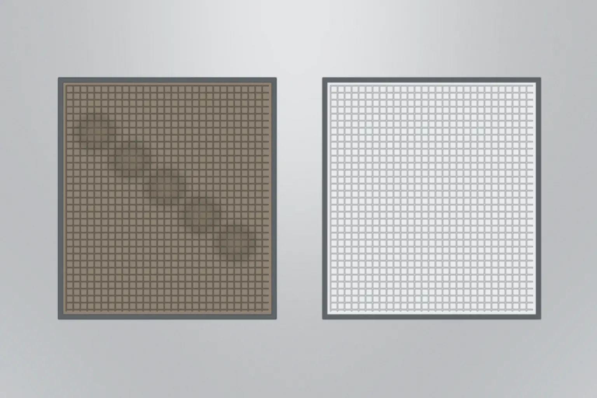
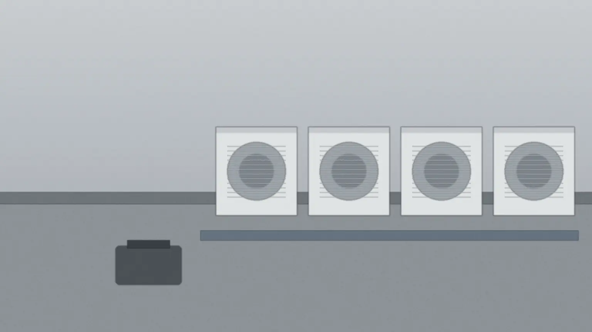
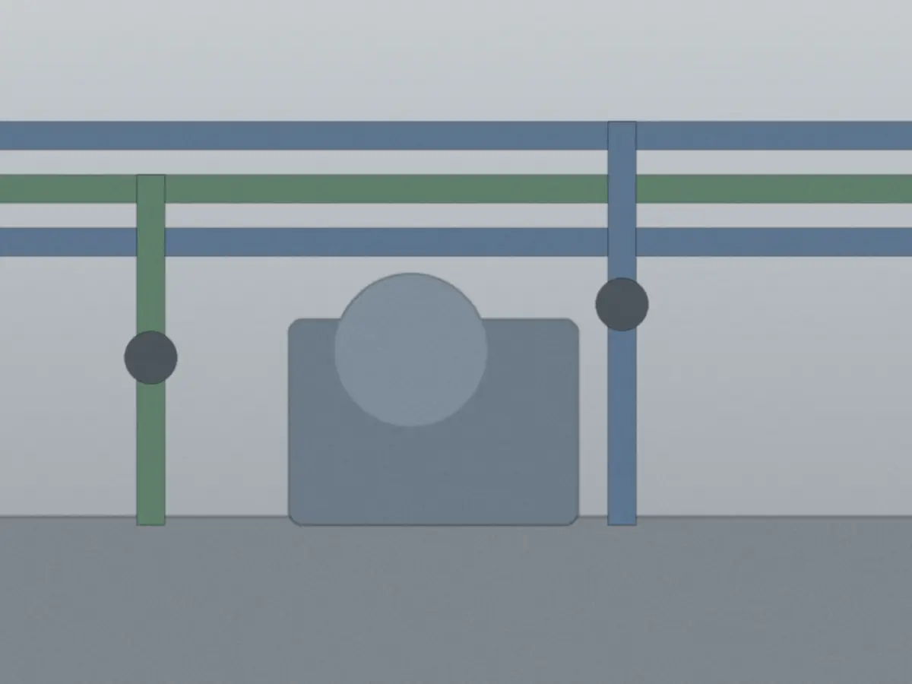

業務用空調室外機・室内機
- フィルターの汚れ・破れの確認と洗浄
- 熱交換器（フィン）の汚れ・曲がり
- 室外機のファン・防振ゴムの劣化
- ドレン（排水）の詰まりと水漏れ
- 運転音・振動・吹き出し温度の記録
写真 1屋上の室外機（画像はAI生成のイメージです）

| 設備 | 年1回 | 半年ごと | 四半期ごと |
|---|---|---|---|
| 空調1台 | 16,500円 | 14,300円 | 12,100円 |
| 給排水ポンプ1基 | 22,000円 | 19,800円 | 17,600円 |
| フィルター洗浄 | 年1回 | 年2回 | 年4回 |
フィルター洗浄は年1・2・4回。1回の最低料金 22,000円。報告書は毎回つきます。
見積もり（現地確認1回まで）は無料です。相談だけでもかまいません。営業の電話や訪問はしていません。
追加費用が出るのは、部品の交換・夜間休日・高所作業車・対応地域の外の4つだけ。条件の表


点検する項目は、どの頻度でも同じです。違うのは、1年の点検の回数と、その時期です。
| 頻度 | 向いている建物 | 123456789101112月ごとの点検時期の例 | 空調4台の年額税込・例 |
|---|---|---|---|
| 年1回 | 事務所など、空調を使う時期が限られる | 66,000円 | |
| 半年ごと | 冷房・暖房の切り替え前に見たい店舗 | 114,400円 | |
| 四半期ごと | 飲食店・工場など、油や粉じんの多い場所 | 193,600円 |
塗った月は一例で、時期は建物の使い方に合わせて決めます。年間の契約にしなくても、1回ずつ頼めます。ほかの台数は台数ごとの早見表で確かめられます。
定期点検報告書
No.0412
| 機器 | 写真1 | 判定2 | 所見 |
|---|---|---|---|
| 室外機 1 | 良好 | 異常なし。音・振動とも前回と同じ | |
| 室外機 2 | 要観察 | 防振ゴムに小さなひび。次回も確認 | |
| 室内機 3 | 交換推奨 | フィルターに破れ。部品の見積もりを別紙で添付3 | |
| 給水ポンプ | 良好 | 圧力は前回と同じ範囲。にじみなし |
次の点検時期42027.03別紙 部品の見積もり（室内機 3）


1事前の確認
電話かメールで、機器の台数と設置場所を伺います。
ご用意機器の一覧、前回の報告書（あれば）
2現地確認
屋上と機械室を見て、見積もりを出します。
ご用意屋上と機械室の鍵
3点検の当日
2〜4時間。空調は運転を止めて行います。
ご用意最初と最後の15分、立ち会いの方1名
4報告書
7営業日以内に、PDFと紙でお渡しします。
ご用意なし
5次回の連絡
次の点検時期の1か月前に、こちらからご連絡します。
ご用意なし
次のことが分かると、最初の返信で概算をお伝えできます。分からない項目は空欄でかまいません。